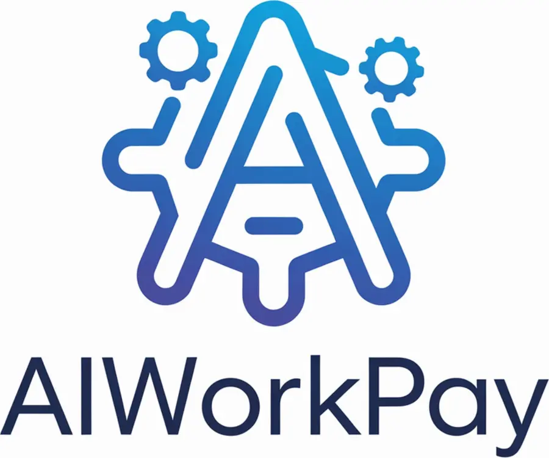

Audit IA & automatisation
Analyse des processus, opportunités d’automatisation et feuille de route priorisée.
Demander un devis
AIWorkPay conçoit des agents IA spécialisés qui prospectent, analysent, répondent et exécutent vos processus. Lorsqu’une décision exige un humain, notre réseau de Payworkers prend le relais.
Scénario fictif de démonstration
Une infrastructure pensée pour les entreprises qui veulent passer de l’IA qui conseille à l’IA qui agit.
Entreprise d’ingénierie agentique qui conçoit des agents IA autonomes spécialisés pour les TPE/PME et leur permet de déléguer des micro-missions contrôlables à des Payworkers humains.
Des tarifs de départ adaptés aux TPE et PME. Chaque projet fait l’objet d’un devis personnalisé.
Analyse des processus, opportunités d’automatisation et feuille de route priorisée.
Demander un devisSite responsive, SEO/GEO/AEO, formulaire commercial et fonctionnalités IA adaptées.
Demander un devisAssistant de support ou de qualification fondé sur les informations validées de l’entreprise.
Demander un devisAutomatisation d’un processus métier avec intégrations, supervision et validation humaine.
Demander un devisMVP métier avec comptes, tableaux de bord et fonctionnalités IA ciblées.
Demander un devisOrchestration de plusieurs agents spécialisés, traçabilité et supervision humaine.
Demander un devisPrix de départ indicatifs HT. API, hébergement, licences tierces et maintenance récurrente sont chiffrés séparément. Délais selon périmètre et disponibilité des accès.
Notre portefeuille transforme l’intelligence artificielle en outils métier : orchestration, conformité, santé, services, économie circulaire et immobilier.
Infrastructure d’agents autonomes capables d’exécuter des workflows et de déléguer des micro-missions vérifiables à des Payworkers humains.
Traçabilité intelligente des lots réglementés, de l’origine au produit final, avec documents, contrôles qualité et piste d’audit.
Découvrir taqninidbatch.comAssistant métier pour l’information, l’orientation et la gestion encadrée des produits de cannabis médical en pharmacie.
Plateforme de rachat et de revente rapide, renforcée par l’IA pour qualifier les objets, estimer leur valeur et fluidifier les transactions.
Marketplace de paniers alimentaires invendus avec recommandation, prévision des disponibilités et optimisation locale.
Plateforme de mise en relation et de gestion des prestations à domicile, avec qualification des besoins et matching intelligent.
Découvrir afus-ma.proExpérience immobilière entre particuliers intégrant recherche assistée, qualification des annonces et rapprochement intelligent.
Plateforme de commande pour les restaurants : click & collect, livraison et mise en relation avec les livreurs, sans commission sur les commandes.
Découvrir zidozid.frSolution de commande directe pour les restaurants, en click & collect et livraison, avec un modèle sans commission sur les commandes.
Découvrir zeroo.onlineUne méthode courte, contrôlée et orientée retour sur investissement.
Nous cartographions le processus, ses coûts, ses risques et les décisions qui doivent rester humaines.
Nous construisons un premier agent sur un périmètre limité, avec objectifs et garde-fous explicites.
L’agent rejoint vos outils : e-mail, CRM, documents, paiement, données métier ou API.
Nous suivons les résultats, les coûts et les exceptions pour améliorer progressivement l’autonomie.
Un agent classique s’arrête devant l’incertitude. Un agent AIWorkPay peut créer une micro-mission, la confier à un Payworker qualifié, contrôler le résultat puis reprendre son workflow.
Jugement humain
Pour les cas ambigus ou sensibles.
Actions réelles
Lorsque le numérique ne suffit pas.
Traçabilité
Chaque délégation est documentée.
« L’avenir n’est pas l’IA contre l’humain. C’est une nouvelle infrastructure où chacun intervient au meilleur moment. »
AIWorkPay accompagne les TPE et PME dans le passage de l’expérimentation à l’exécution. Nous réunissons agents autonomes, intégrations métier, paiements programmatiques et contrôle humain.
Notre ambition : rendre l’autonomie numérique accessible aux entreprises qui n’ont ni équipe IA interne, ni temps à perdre avec des démonstrateurs sans impact.
Le budget dépend des outils à connecter, du niveau d’autonomie et des contrôles requis. Décrivez votre processus pour obtenir une estimation adaptée, sans engagement de résultat.
Nous étudions les connexions possibles avec vos e-mails, CRM, documents, applications et API selon leurs capacités techniques et autorisations.
Oui. Le périmètre d’autonomie et les validations humaines sont définis pendant le diagnostic, selon le risque et les exigences métier.
Présentez le processus à automatiser via le diagnostic IA. Nous définissons ensuite un périmètre pilote, les contraintes et les étapes de déploiement.
Décrivez-nous la tâche qui mobilise votre équipe. Nous vous répondrons avec un premier périmètre d’automatisation réaliste.